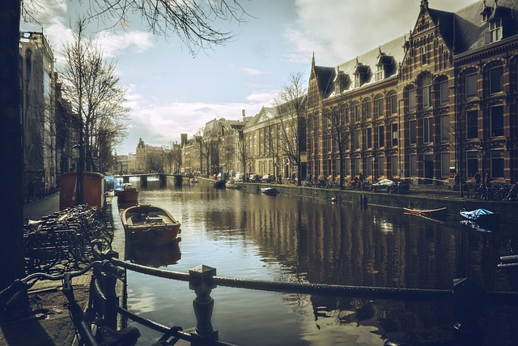

Bienvenido a Ámsterdam
Ámsterdam es famosa por sus canales, el Museo Van Gogh y el Barrio Rojo. Disfruta de sus tranquilas calles en bicicleta y de su animada vida nocturna.
Ámsterdam es famosa por sus canales, el Museo Van Gogh y el Barrio Rojo. Disfruta de sus tranquilas calles en bicicleta y de su animada vida nocturna.